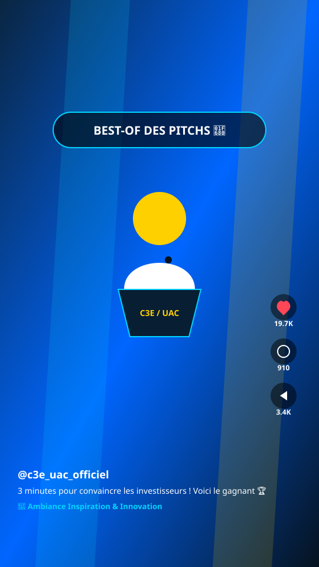
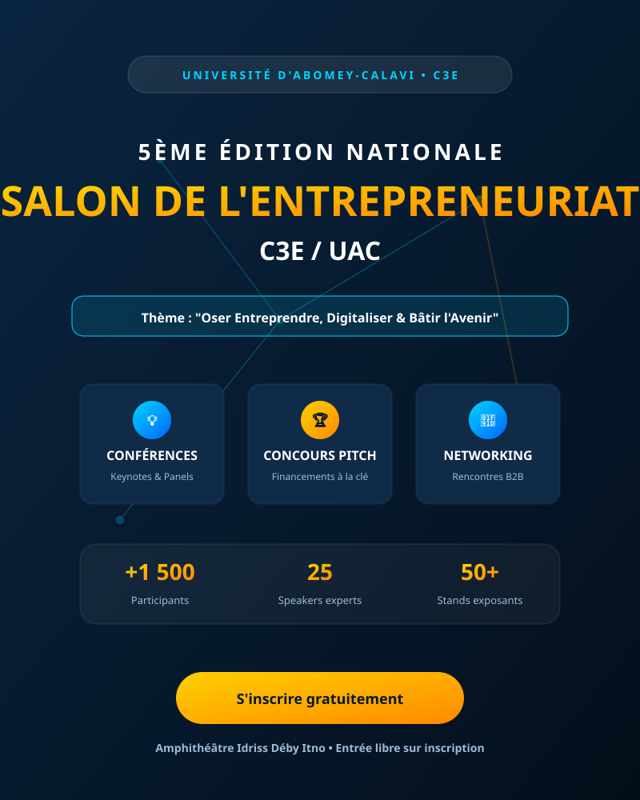
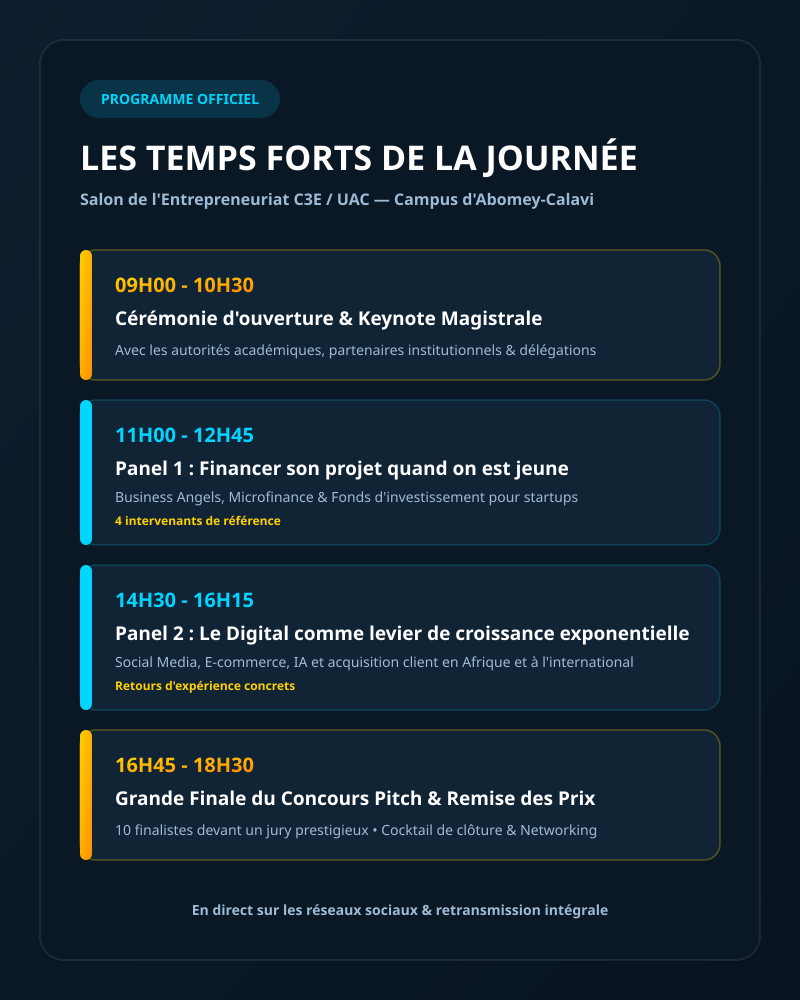

Des formats courts taillés pour valoriser l'écosystème entrepreneurial et l'image de marque de l'institution.

Compilation des meilleures répliques des finalistes devant le jury d'investisseurs. Sous-titrage soigné, jauge de temps à l'écran et musique entraînante qui a généré de nombreux partages de la part des incubateurs et partenaires.

Interview rapide d'un directeur de fonds d'investissement à la sortie de sa conférence. Format questions-réponses incisif, pensé pour capter l'attention des jeunes porteurs de projets sur les réseaux.

Présentation des stands d'exposition, des signatures de partenariats et des moments d'échange informels. Outil de communication clé transmis par la direction de l'UAC pour préparer l'édition suivante.
Bénéficiez d'une couverture digitale rigoureuse et percutante qui valorise vos partenaires, fidélise vos participants et renforce votre notoriété.